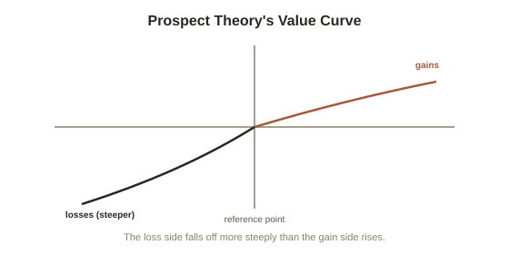

Chapter 3: Loss Aversion and Prospect Theory
Chapter 2 flagged loss aversion as a specific bias worth its own treatment, and it's arguably the single most influential finding to come out of Kahneman and Tversky's decades-long partnership — the one that most directly launched behavioral economics as a field. It answers a deceptively simple question: does losing $100 feel the same, emotionally, as gaining $100 feels good? The answer, replicated in study after study, is a clear no.
Losses loom larger than equivalent gains
Loss aversion is the finding that losses are felt, psychologically, roughly twice as intensely as equivalent gains — losing $100 hurts about as much as gaining $200 feels good. Kahneman and Tversky formalized this inside prospect theory (their 1979 alternative to standard economic models of decision-making under risk, which assumed people evaluate outcomes by their final wealth; prospect theory instead argues people evaluate outcomes as gains or losses relative to a reference point, and weight them asymmetrically), the work that eventually won Kahneman the 2002 Nobel Prize in Economics. The theory's signature graph shows why this asymmetry matters so much: the psychological impact of an outcome depends heavily on which side of your current reference point it falls on, not just its raw size — and the loss side of that curve is steeper than the gain side, which is the entire asymmetry compressed into one shape.

The endowment effect: owning something inflates its value
One of the cleanest real-world demonstrations of loss aversion is the endowment effect: simply owning an object, even briefly, makes people value it more than they would if they didn't own it — because giving it up now registers as a loss, not a foregone gain. In a well-known experiment, participants randomly given a coffee mug demanded roughly twice as much money to sell it as a separate group of participants, shown the identical mug, were willing to pay to buy it — despite there being no actual difference in the mug's value between the two groups. Nothing about the mug changed; only which side of the transaction (giving something up versus never having had it) each group was on. This shows up constantly outside the lab: a homeowner overvaluing their own house relative to what buyers are actually willing to pay, or the reluctance to sell a losing stock — Chapter 1's "should I sell now" question gets warped by loss aversion, since selling at a loss forces the loss to be felt and formally realized, which people go to real, sometimes costly lengths to avoid.
Framing: the same choice, dressed as a gain or a loss
Because gains and losses are weighted so differently, how a choice is framed — even holding the actual outcomes completely identical — can flip what people choose. In Kahneman and Tversky's classic "Asian disease" experiment, participants were told a disease would kill 600 people, and asked to choose between two programs. Framed in terms of lives saved ("200 people will be saved" versus a gamble with a one-third chance of saving everyone and a two-thirds chance of saving no one), most participants chose the certain option. Framed in terms of lives lost — mathematically identical outcomes, just described as "400 people will die" versus the same gamble — most participants switched to the risky option instead. Nothing about the actual consequences changed between the two framings; only whether the guaranteed option was described as a certain gain or a certain loss, and loss aversion made people risk-averse toward the framed gain and risk-seeking to avoid the framed loss.
Where this leaves you as a decision-maker
Loss aversion isn't a flaw you can simply switch off by knowing about it — Chapter 1 already established that awareness barely reduces most of these effects in real time. What it does give you is a specific, checkable question to ask of any decision that feels lopsided: is this actually about the real stakes, or is it about which side of a reference point the options happen to be framed on? A decision that looks completely different depending on whether it's phrased as "90% survival" or "10% mortality" — identical numbers, opposite gut reactions — is a strong sign loss aversion, not the actual facts, is doing the deciding.
Try this
Ideas for noticing or testing this in your own life.
- Test the endowment effect on yourself: pick something you own and ask what you'd sell it for, then imagine you didn't own it and ask what you'd pay to buy it — notice the gap.
- Reframe a real decision you're avoiding: if it's framed as a potential loss, deliberately rewrite it as a potential gain (or vice versa) and see whether your gut reaction to the identical facts actually changes.
Worth pulling on?
A few loose threads from this chapter — if any of these genuinely grab you, that's a good sign of where to go next.
- Loss aversion has a close cousin in how people predict costs and time for their own future projects — another case where the reference point people anchor to is systematically the wrong one. → The subject of the next chapter: the planning fallacy and overconfidence.
- Prospect theory is foundational to a much wider body of work on predictable irrationality in markets and everyday financial decisions. → Already in the library: Behavioral Economics covers loss aversion's economic applications in more depth.